1/5Case study / 2026
View case
Hands-on product designer with over 10 years of experience building 0 to 1 products for startups and Fortune 500s.
Build something real, put it in people’s hands, and let them show you what to build next.
I trained as an industrial designer in Delft. So I look at the whole product, from the people using it to the code under it. Over ten years of zero to one, I learned to start with people’s workarounds. Then I build something real, straight into code. I like to get a product out fast, test it, iterate, and then obsess over the details.
This is my home turf: taking a vague idea and turning it into something real. Research, flows, UI, design system, the lot.
I design end to end and stick around for the messy part where it gets built.
Strategy is deciding what to build and, more importantly, what not to. I start with the problem and stay grounded in what users need and what the business can actually pull off.
All of it fits on one page. Promise.
I design in the medium the product ships in. Layout, motion and edge cases get worked out in real code, so what the team reviews and people test is the thing itself, and nothing gets lost in a handover.
With AI in the loop that takes days. Juno went from idea to live product in four.
I’ve built and led design teams for over 5 years, and I still open Figma every day. I give designers real ownership, clear feedback, and cover when they need it.
Good people do great work when you stop micromanaging them.

Got an idea that needs building? Or just want to argue about design? Either works.